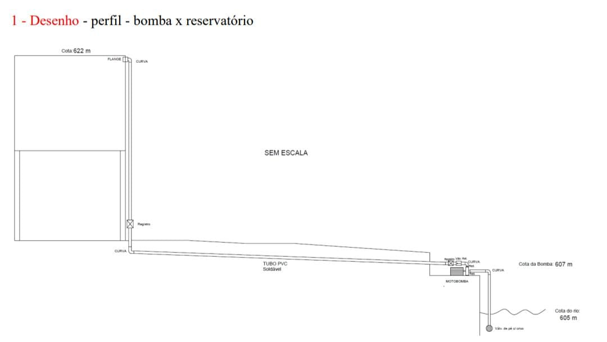

Simulação e orçamento completo de instalação
Este projeto tem como finalidade a instalação de uma bomba para caixa d’água, com apresentação interativa e orçamento completo.
A bomba será instalada no interior da caixa d’água com saída para tubulação pressurizada, passando por registro e filtro antes da distribuição.
O site inclui elementos interativos como visualização de peças em 3D , simulação de funcionamento e geração de PDF.
Explore o sistema de bombeamento com visualizações em 3D e simulações.
🔍 Visualizar 📥 Baixar PDF